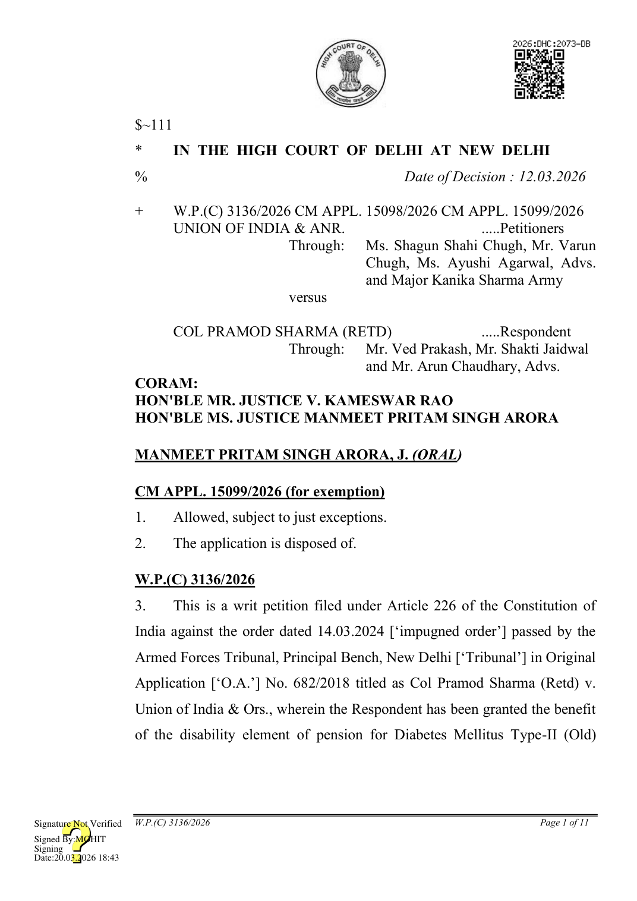
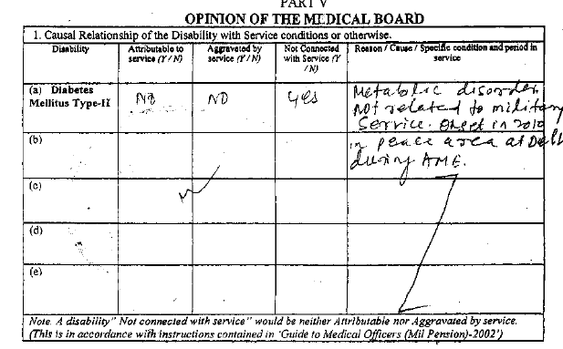

assessed at 20% for life, rounded off to 50% for life, from the date of his discharge from the service.
- The facts giving rise to the present petition are that the Respondent retired from the service on 31.08.2011. The Release Medical Board [‘RMB’], held on 09.02.2011, assessed his disability i.e., Diabetes Mellitus Type-II at 15% to 19% for life. The RMB opined that the onset of the disease i.e. Diabetes Mellitus Type-II (Old) was at the time when the Respondent was serving at the peace station i.e., in August 2010; that the disease of Diabetes Mellitus Type-II (Old) is metabolic in nature; there is no causal connection with the services, therefore, the aforesaid disability was neither attributable to nor aggravated [‘NANA’] by the military service.
- The Respondent’s claim of disability pension was rejected by the Petitioner vide letter dated 31.05.2011. The Respondent’s first appeal dated 17.01.2017 challenging the said refusal, had also been rejected by the Appellate Committee on First Appeal.
- In these facts, Respondent filed O.A. No. 682/2018 before the Tribunal for the grant of disability element of pension. By the impugned order, the Tribunal while referring to the judgment of the Supreme Court in Dharamvir Singh v. Union of India and Ors.1 granted the relief of disability pension to the Respondent. The Tribunal relied upon Union of India v. Ram Avtar2 to grant the respondent benefit of rounding off the disability element of pension. The Tribunal also relied upon the policy dated
1 2013 (7) SCC 361 2 2014 SCC Online SC 1761
20.12.2012 to hold that the disability of Diabetes Mellitus Type-II cannot be assessed for less than 20%.
- The submissions made by the learned counsel for the Petitioner is that the reliance placed by the Tribunal on the judgment of Dharamvir Singh v. Union of India and Ors. (supra) is totally misplaced as in the said case the Supreme Court was concerned with the Entitlement Rules for Casualty Pensionary Awards, 1982 [‘Entitlement Rules, 1982’], whereas the case of the Respondent needs to be considered under the Entitlement Rules for Casualty Pensionary Awards to Armed Forces Personnel, 2008 [‘Entitlement Rules, 2008’].
- It is stated that the Tribunal has overlooked the Entitlement Rules, 2008, which governs attributability and aggravation and no longer permit a blanket presumption in favour of the claimant/officer and since the RMB has opined the diseases to be NANA, the Tribunal could not have presumed a causal connection between the disease and the service.
- It is stated in the facts of this case, Respondent superannuated on 31.08.2011 and therefore, the Respondent would be governed by Entitlement Rules, 2008. It is stated that the impugned order incorrectly applies the presumption under the repealed Entitlement Rules, 1982, ignoring the amended regime under Entitlement Rules, 2008.
- It is stated that the Entitlement Rules, 2008, have done away with the general presumption to be drawn to ascertain the principle of ‘attributable to or aggravated by military service’.
- He states that entitlement of the disability pension is governed by the eligibility conditions stipulated in Regulation 81 of the Pension regulation, 2008, which stipulates that, unless otherwise specifically provided, a disability pension may be granted to an officer who is invalidated out of service on account of a disability which is attributable to or aggravated by military service and in the present case the Respondent was superannuated from the service. Therefore, he is not entitled to the disability pension.
- The submission made by the learned counsel for the Petitioner is that Regulation 37 of the Pension regulation, 2008 permits, grant of disability pension only where the disability pension is assessed at 30% or more. Regulation 37 of the Pension Regulation, 2008, is reproduced herein: “37. (a) An Officer who retires on attaining the prescribed age of retirement or on completion of tenure, if found suffering on retirement, from a disability which is either attributable to or aggravated by military service and so recorded by Release Medical Board, maybe granted in addition to the retiring pension admissible, a disability element from the date of retirement if the degree of disability is accepted at 30% or more.
- The disability element for 100% disability shall be at the rate laid down in Regulation 94 (b) below. For disabilities less than 100% but not less than 30%, the above rates shall be proportionately reduced. Provisions contained in Regulation 94(c) shall not be applicable for computing disability element.” (Emphasis supplied)
- No other grounds have been pressed by the Petitioner. Court’s Analysis
- Having perused the reasons recorded in the opinion of the RMB, we are unable to agree with the submissions made by the learned counsel for the Petitioner that the Tribunal committed any error in granting relief to the Respondent.
- In the facts of the present case, the Respondent superannuated on 31.08.2011 and consequently his claim for disability pension would admittedly be governed by Entitlement Rules, 2008. Therefore, the submission of the Petitioner that the governing Rules applicable to the Respondent’s claim are Entitlement Rules, 2008, is factually correct.
- Separately as regards Entitlement Rules, 2008, the coordinate Benches of this Court in Union of India v. Ex. Sub Gawas Anil Madso3 and Union of India vs. Col. Balbir Singh (Retd.)4, has after examining the Entitlement Rules, 2008 held that even under these Rules, the onus to prove causal connection between the disease remains with the military establishment and the officer cannot be disentitled to the claim of disability pension unless the Medical Board records cogent reasons identifying causative factors leading to the disability other than Military Service.
- We also take note of a recent decision of the Supreme Court in the case of Bijender Singh vs. Union of India5 pertaining to disability pension which has reiterated that it is incumbent upon the Medical Board to furnish cogent reasons for opining that a disease is NANA and the burden to prove the causal connection is on the Military Establishment.
- The law is therefore well settled on the issue that onus to prove disentitlement remains with military establishment both under the Entitlement Rules, 1982 as well as Entitlement Rules, 2008.
- We have examined the facts of this case and the RMB placed on record.
- The Respondent was enrolled in the Indian Army on 07.01.1980 and the disease/disability of Diabetes Mellitus Type II was discovered in the year 2010. The opinion rendered by the RMB is extracted as under:
3 2025: DHC: 2021-DB 4 2025: DHC: 5082-DB 5 2025 SCC OnLine SC 895 at paragraphs 45.1, 46 and 47

- The Petitioners relying upon the RMB contend that the disease/disability of Diabetes Mellitus Type–II is a metabolic disorder and since the onset of the said disability is at a peace station, the said disability is therefore NANA. As is evident on a perusal of the RMB, no causative factors for holding the disease NANA have been enlisted in the RMB. The opinion in the RMB fails the test of a reasoned opinion as stipulated in the aforesaid judgments of the Supreme Court and Division Benches of this Court. ‘Onset of disease at Peace Station’ has been categorically held to be an invalid ground for holding NANA by the Division Bench in Ex. Sub Gawas Anil Madso (supra) and Col. Balbir Singh (Retd.) (supra).
- The RMB categorically records in response to the question no. 2 that the disability did not exist in the Respondent before he entered the military service and in response to the question no. 5 (a) and (b) it records that the disability is not attributable to the officer’s own negligence or misconduct. It is thus evident that the disease of Diabetes Mellitus Type–II was indisputably contracted during military service and the Respondent is not responsible of any negligence leading to the causation of the said disease. The opinion in the RMB that the disease is a metabolic disorder, can also not be sustained as a valid ground for denying disability pension since the causative factors which led to the metabolic disorder have not been enlisted in the RMB. It would be apposite to refer to another decision of the Supreme Court in Rajumon T.M. v. Union of India6 wherein the Court has similarly held that the opinion of the Medical Board in the RMB opining “Constitutional Personality Disorder” in the absence of enlistment of the causative factors cannot be construed as a reasoned opinion.
- In these facts, the opinion in the RMB for holding NANA and the Petitioner’s decision denying disability pension has thus been rightly rejected by the Tribunal. Since no other causal connection for the disease has been found to exist by the Medical Board, we agree with the Tribunal that the plea of disability pension has been wrongly rejected by the Military establishment.
- Learned counsel for the respondent has pointed out that the tribunal at paragraph 9 of the impugned order assessed the disability of Diabetes Mellitus Type–II at 20% on the basis of the MOD letter no. 16036/DGAFMS/MA (Pens)/Policy dated 20.12.2012 and the letter dated 12.05.2023, to conclude that as far as the disability of Diabetes Mellitus Type–II is concerned, the minimum assessment of the disability cannot be assessed at less than 20%. The relevant paragraph of the impugned judgment reads as under: “9. On the careful perusal of the materials available on record and also
6 2025 SCC OnLine SC 1064 at paragraphs 25,26,32 and 36
the submissions made on behalf of the parties, it' is established that in so far as the disability of Diabetes Mellitus Type-II is concerned, the minimum assessment of the disability cannot be less than 20% in terms of MoD letter No. 16036/ DGAFMS/MA (Pens) / Policy dated 20.12.2012, accorded concurrence on 12.05.2023 vide letter No. Air HQ/99801/4/DAV (Med). The only question which needs to be decided is whether the disabilities are attributable to or aggravated by military service.” Emphasis supplied
- The said Guidelines were issued specifically to remove the inconsistent practice regarding the permissible assessment of disability percentages, particularly in cases of Diabetes Mellitus and Epilepsy. These Guidelines have been approved by the Director General Armed Forces Medical Services (DGAFMS), and were intended to bring uniformity, certainty, and standardisation in the medical boards’ assessment of disability percentage. In terms of the said Guidelines, it is clearly stipulated that in cases of Diabetes Mellitus Type–II, the minimum assessable disability is 20%. In other words, once Diabetes Mellitus Type–II is diagnosed and is assessed as a disability for service/medical board purposes, the percentage cannot be pegged below 20%, and any lower assessment would be contrary to the binding standard laid down under the DGAFMS-approved policy framework. The petitioner has also drawn our attention to the judgment of the Co-ordinate Bench in Union of India & Ors v. GP Capt. Gajendra Kumar (Retd.)7 where in identical facts the Division Bench upheld the decision of the Tribunal Bench assessing the disability of Diabetes Mellitus
7 2025:DHC:11415-DB
Type–II at 20% relying upon the said policy even though, the RMB had assessed it at 15-19% in the said case.
- Accordingly, we are of the considered view that the reasoning recorded by the Tribunal in the said paragraph ‘9’ of the impugned order is supported by material on record, is neither perverse nor arbitrary, and does not warrant interference. The findings in paragraph 9 reflect a proper appreciation of the relevant facts and legal principles; therefore, no ground is made out to set aside the impugned order.
- The petitioner at paragraph 4(b) of the writ petition has referred to Regulation 37 of Pension Regulation, 2008 to contend that for entitlement of disability pension the degree of disablement has to be 30% or more. However, the text of the regulation reproduced in the writ petition does not correspond to the text of the regulation available in the copy available with the Court, where Regulation 37 reads as extracted herein below and as is apparent, the said regulation prescribes that for entitlement of disability pension, the minimum percentage is 20%. Regulation 37 reads as under: “37. (a) An Officer who retires on attaining the prescribed age of retirement or on completion of tenure, if found suffering on retirement, from a disability which is either attributable to or aggravated by military service and so recorded by Release Medical Board, maybe granted in addition to the retiring pension admissible, a disability element from the date of retirement if the degree of disability is accepted at 20% or more.
- The disability element for 100% disability shall be at the rate laid down in Regulation 94 (b) below. For disabilities less than 100% but not less than 20%, the above rates shall be proportionately reduced. Provisions contained in Regulation 94(c) shall not be applicable for computing disability element.” (Emphasis supplied) The petitioner has itself placed on record the Pension Regulations, 2008 as Annexure P-2 to this petition and at internal page 228 of the said Annexure Regulation 37 is printed which stipulates the minimum degree of disability of 20% which matches with the copy of the regulations available with the Court. It is therefore, apparent that the text of Regulation 37 relied upon in the writ petition is erroneous. In addition, Regulation 53(a) of the said 2008 Regulations applicable in respect of the “Disability Element for Disability at the time of Discharge/Retirement” also stipulates that the accepted degree of disability should be assessed at 20% or more. Since the Petitioner superannuated from service, the said regulation would be applicable to him. Regulation 53(a) reads as under: “53. (a) An individual released/retired/discharged on completion of term of engagement or on completion of service limits or on attaining the prescribed age (irrespective of his period of engagement), if found suffering from a disability attributable to or aggravated by military service and so recorded by Release Medical Board, may be granted disability element in addition to service pension or service gratuity from the date of retirement/discharge, if the accepted degree of disability is assessed at 20 percent or more.” (Emphasis supplied) This contention of Petitioner is therefore, misconceived and without any merits.
- In this regard, this Court notes that the Entitlement Rules, 2008 at Rule 4(a) prescribe that the disability element for which the personnel will be entitled to pension should be not less than 20%. The said Rules were notified to the petitioners on 18.01.2009, however, the said rules came into
8 Printed page 93 of the paper book
effect from 01.01.2008 and therefore, bind the petitioners herein. It is the admitted stand of the Petitioners that the said Rules are applicable to the parties. For the reason also, the contention raised at paragraph 4(b) of the Writ Petition and the grounds to allege that the minimum disability has to be 30% is incorrect.
- Additionally, we note that the impugned order is dated 14.03.2024 and the petition has been filed after more 2 years, without any explanation for such a undue delay. The Petitioner was obliged to comply with the impugned order of the Tribunal within four months, however, the same has not been complied with till date. Keeping in view that the claim of disability pension is beneficial in nature, we hold that filing of this petition is also barred by delay and laches.
- In view of the aforesaid findings, the Petitioners’ challenge to the grant of disability element of pension to the Respondent by the Tribunal, is without any merits. The Respondent has been rightly held to be entitled to the disability pension.
- We therefore find no merit in this petition; the petition is dismissed. Pending application(s), if any, stand dismissed. No costs.
MANMEET PRITAM SINGH ARORA, J
V. KAMESWAR RAO, J MARCH 12, 2026/AJ